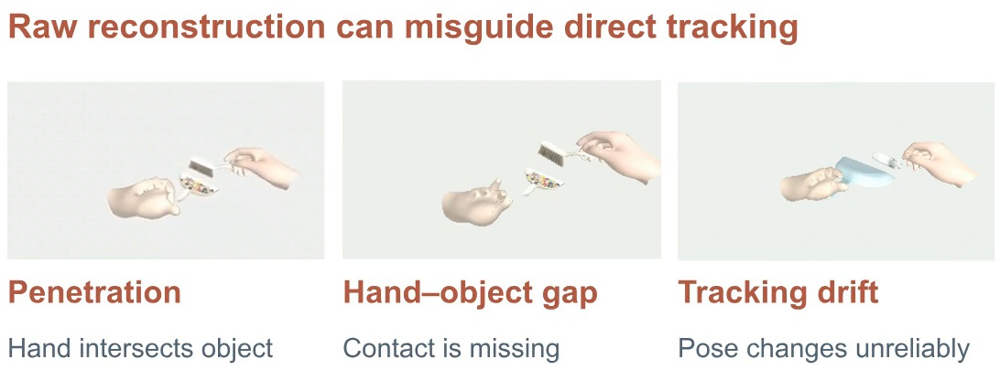
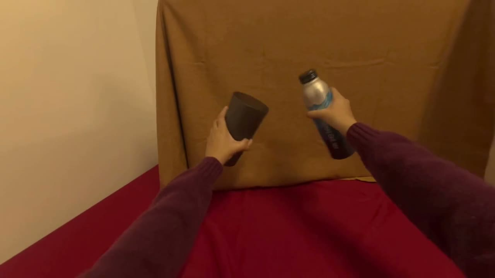

PRIDEX / RESEARCH PROJECT
From human videos.
To robot demonstrations.
PriDex: From Human Videos to Bimanual Dexterous Manipulation Data
Human motion is a useful starting point. A robot still needs its own way to grasp, move, and make contact.
- My role
- Research Intern · UC Berkeley, Tomizuka MSC Lab
- Focus
- Confidence, grasp priors, residual RL, robot deployment
- Project period
- June–September 2026 · manuscript in preparation
01 / THE CHALLENGE
A visual prior is not a control command.
Reconstruction can lose contact, intersect an object, or drift. Human hands and robot hands also have different kinematics.

02 / FROM PRIORS TO EXECUTION
Six stages. One physical bridge.
Explore how a video-derived representation becomes data a robot can learn from.
01 / OBSERVE
Start with the interaction.
Human RGB video supplies motion and contact cues. It is an observation of the human task, not a robot action sequence.
Video reconstruction was shared with teammates.

Residual RL improves robot execution around adapted references. It does not re-estimate or repair the original 3D reconstruction.
03 / WATCH THE STAGES
One task, three views.
Compare the observed human task, a trained RL teacher rollout, and downstream visual policy deployment.
01 Human Demonstration
Source RGB footage
02 Simulation Rollout
Trained RL teacher · 3× speed
03 Real-Robot Deployment
Visual policy · 3× speed
Press Play all, or play each stage separately.
Successful simulation demonstrations satisfy their corresponding task criteria, which can cover a task segment. These selected clips do not establish complete routines or robustness across arbitrary initial states.
04 / MY CONTRIBUTION
Where I worked.
- Confidence & grasp priorsReconstruction confidence, grasp candidate generation, and filtering.
- Robot learningRL environments, reward design, and PPO training for residual refinement.
- Real-robot deploymentDeploying and evaluating manipulation policies on the physical robot.
- Shared reconstructionVideo reconstruction in collaboration with teammates.
Demonstration generation and Diffusion Policy training were primarily led by other team members. The pipeline and media are team research.
05 / ENGINEERING PERSPECTIVE
Separate the reference from the execution.
The engineering problem spans several interfaces: uncertain perception, robot-specific grasping, reward design, and physical deployment.
Adapt before learning. Spatial and temporal alignment, grasp selection, and IK make the video prior usable by the robot.
Learn contact through execution. Confidence guides how the policy uses a prior while residual RL learns behavior under simulated dynamics.
Keep the data boundary clear. Observations and actions from qualifying robot executions become demonstrations for downstream visual learning.
06 / RESOURCES & LIMITS
A work in progress.
Manuscript preparation is ongoing. A paper link and project code will be added when a public release is ready.
A public Slides cut is under review. The full presentation is not available for download.
GitHub profile ↗Reading these demonstrations
- Selected examples, rather than a performance benchmark.
- Simulation footage shows trained policy execution, not the training process.
- Task criteria and demonstrated starting conditions define the scope of each example.
- The project film is a reviewed silent web edit, not an unchanged copy of the original research video.